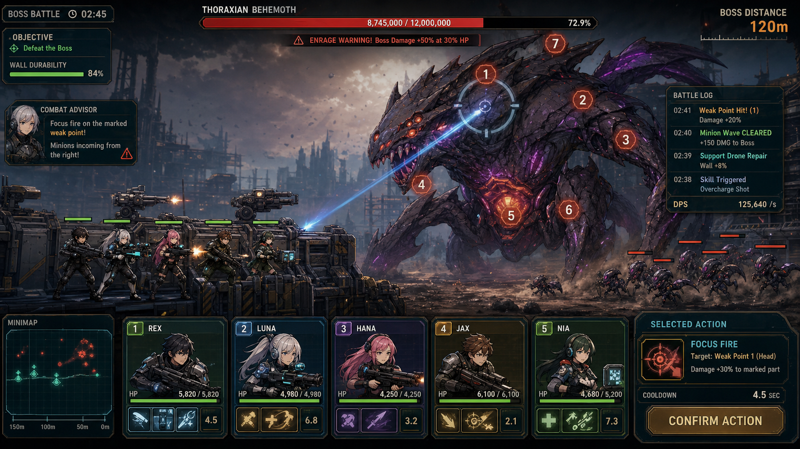

2026-11-04 / v1.7.1 preview — 현재 구현과 검증
2026-11-04 / v1.7.1 preview — 현재 구현과 검증
- [사실] 사용자에게 이번 12·36번 GDD를 Codex가 갱신해도 된다는 별도 승인을 받았다. Claude가 초기 코드/테스트를 작성한 뒤 한도에 도달했고, Codex가 검토·회귀 보완·실행 검증 및 이 보충을 작성했다.
- [사실] 기준 소스는 GitHub master
467574f(v1.7.0), 작업 브랜치는codex/squad-matchup-20261104, 경로는D:/CodexBuilds/workspaces/12_NIKKE-matchup이다. 복원본33c6e15(v1.6.0)의 네 편성 이유 칩을 제한적으로 이식했으며 master의 RuntimeAudioDirector/기존 결과 경로를 유지했다. 서로 다른 스냅샷과 과거 배포본의 동일성을 주장하지 않는다. - [사실] 현재 5명 고정 배치를 바꾸는 편성 메뉴를 새로 만들지 않았다. CombatAdvisor의 첫 줄은 화력·생존·사거리·포지션 라벨을, 둘째 줄은 실제 웨이브 압박과 현재 우선할 행동 하나를 표시한다. 전사/분노/결과는 우선 경고로 표시한다.
- [사실]
WaveSystem.GetPhaseParams의 출현 수·간격·적 비중을 이용해 현재 압박 또는 5초 이내 다음 단계 예고를 표시한다. 예고는 5초 유지하며, 단계/예고 상태가 달라질 때만 이벤트를 전달한다. 원래 적 출현 수치와 공격 규칙은 유지한다. - [사실] 광역 엄호 담당은 실제 splashRadius가 있고 살아 있는 대원을 기준으로 추천한다. 해당 역할이 없으면 일반 엄호 담당을 안내하며, 전사 뒤에도 남은 예고를 다시 계산한다. 존재하지 않는 원소 상성을 넣지 않았다.
- [제안/미검증] 압박 예고를 읽고 잡몹 담당을 먼저 정하면 같은 전투에서 역할 판단이 빨라질 수 있다. 예고가 읽히지 않거나 경고를 가리거나 전사자를 추천하는 관찰이 나오면 표시/우선순위를 재수정한다. 실제 참여자 테스트·재미·시장성 검증은 수행하지 않았다.
- [직접 검증] Unity 2022.3.62f3 EditMode 최종 62/62 통과. 증거:
D:/CodexBuilds/tasks/12-matchup-20261104/editmode-verified.xml. UI 이벤트 구독/해제, 라벨 유지, 긴급 알림 우선순위, 전사 뒤 담당 변경을 포함한다. - [직접 검증]
node scripts/package-unity.cjsWindows 빌드/공통 배치 성공. 최종D:/CodexOutputs/SquadVsMonster/SquadVsMonster.exe, v1.7.1 preview, SHA-256f5f73d8616a2500e0fb0223d83774e2d7f6a74c1bbdad772f4fefc9bf5812036. 필수_Data/MonoBleedingEdge/UnityPlayer.dll을 함께 유지한다. 단일 파일 portable wrapper가 아니다. - [직접 검증/제한] 실제 실행 로그에서 Unity/Direct3D 초기화와 Exception 0건을 확인했다. 실제 화면 가독성/조작 QA는 부모 작업의 확인 결과를 별도 보충한다. 과거 스크린샷은 이번 구현의 증거로 세지 않는다.
SquadVsMonster
- 문서 유형: 게임 디자인 문서(GDD)
- 문서 버전: 2.0
- 최신화: 2026-09-11 (KST)
- 프로젝트/소스 기준 버전: v1.7.0 (근거:
ProjectSettings/ProjectSettings.assetbundleVersion: 1.7.0,docs/SquadVsMonster_BuildValidation_2026-09-08.md"Source version: 1.7.0. Existing portable: 1.6.0.") - 근거 표기 범례: [사실] = 코드/애셋 파일 직접 확인, [제안] = 미검증 가설, 미검증 = 확인 시도했으나 소스에서 값/구현을 찾지 못함
0. 2026-09-11 당시 버전/실행파일 비교 기록
- [사실]
ProjectSettings/ProjectSettings.asset144행bundleVersion: 1.7.0— Unity 프로젝트의 권위 버전 소스. - [사실]
docs/SquadVsMonster_BuildValidation_2026-09-08.md: "Source version: 1.7.0. Existing portable: 1.6.0." — 소스 코드는 1.7.0으로 올라갔지만 실제로 배포된 portable exe(SquadVsMonster_v1.6.0_portable.exe, 루트/release/동일)는 아직 1.6.0 빌드다. - [사실]
docs/SquadVsMonster_기획서.md는 "기획서 v1.6.0"으로 표기되어 있고 최신화일은 2026-07-16이다. 즉 기획서 문서와 실제 소스 버전 사이에도 갭이 있다. - 결론: 본 GDD는 소스 기준 v1.7.0을 프로젝트 버전으로 표기한다. 플레이 가능한 실행 파일(portable exe)은 아직 v1.6.0 빌드이므로, 신규 재현·QA 시 이 갭을 인지해야 한다 [사실].
1. 플레이 예시 미리보기


두 이미지 모두 docs/ 폴더에 실재하는 파일이며 [사실], 기존 SquadVsMonster_기획서.md가 SquadVsMonster_gameplay_preview.png를 문서용 공유 이미지로 이미 사용 중이므로 해당 상대경로 링크를 그대로 보존했다.
2. 문제 정의
스쿼드 자동전투와 보스 공략을 좋아하는 플레이어는 전투가 자동으로 진행될수록 "내 조합이 왜 이겼고 왜 졌는지"를 놓치기 쉽다 [제안, 기존 기획서 문제정의 계승]. SquadVsMonster는 짧은 보스전 세션에서 약점 조준, 재장전 타이밍, 생존 커버 상태를 실시간으로 읽게 하고, 전투 종료 직후 "다음에 무엇을 바꿔야 하는지"를 한 줄로 짚어주는 Unity 2D 전투 프로토타입이다.
- [사실]
SquadMemberConfigSO5종(Alpha/Bravo/Charlie/Delta/Echo),MinionConfigSO3종(Runner/Berserker/Spitter),BossConfigSO1종(파츠 7개)이 애셋으로 존재해 스쿼드-미니언-보스 3축 전투 구조가 실재함(Assets/Configs/*.asset). - [사실]
CombatAdvisorLogic.cs가 전투 전 조합 프리뷰(GetSquadCompositionPreview)와 전투 후 결과 요약(GetWaveResultSummary, cue line 포함)을 계산하는 로직으로 실존함.
3. 한 줄 피치
보스 부위 약점과 스쿼드 역할을 읽고, 자동전투 결과를 다음 판단(재조준·역할 배분)으로 바로 연결하는 세션형 보스 공략 슈터.
4. 디자인 필러 (Design Pillars)
- 읽히는 판단 근거 — 승패가 "운"이 아니라 "약점 조준/재장전 타이밍/화력 배분" 중 어느 병목이었는지 즉시 드러나야 한다. 근거:
CombatAdvisorLogic.GetWaveResultSummary가 생존 붕괴/화력 부족/재장전 겹침/타이밍 실패 4가지 원인 분기를 코드로 구현 [사실]. - 보스 부위 파괴 전략 — 보스는 단일 HP바가 아니라 부위별(HEAD/CHEST/ARM_L/ARM_R/LEG_L/LEG_R/CORE) HP와 데미지 배율을 갖고, CORE는 시작 시 비활성 상태다. 근거:
BossConfig.asset의 7개parts항목, COREactiveOnStart: 0,damageMult: 3[사실]. - 즉시 개입 가능한 반자동 전투 — 완전 방치형이 아니라
AimController로 조준을 개입할 수 있고,CombatAdvisorUI가 실시간 조언을 띄운다. 근거:Assets/Scripts/Entities/Squad/AimController.cs,Assets/Scripts/UI/CombatAdvisorUI.cs,AimControllerTests.cs존재 [사실].
5. 구성요소
| 요소 | 역할 | 선택지 | 입력 → 판단 → 피드백 | 상태 |
|---|---|---|---|---|
| 스쿼드 5인(Alpha/Bravo/Charlie/Delta/Echo) | 화력/생존 담당, 고정 슬롯 배치 | 현재는 선택지 없음 — 5명 전원이 고정 슬롯에 자동 스폰됨 [사실, SquadRuntimeSpawner.SpawnSquad가 Mathf.Min(5, squadConfigs.Length)로 5명을 GameConfig.SQUAD_SLOT_X/Y 고정 좌표에 배치] |
입력: 없음(자동 배치) → 판단: 무기 DPS/사거리/스페셜로 조합 성향 계산 → 피드백: CombatAdvisorUI의 Firepower/Defense/Position 라벨 |
정상 사격 / 재장전 / 다운(HP 0) |
| 보스(단일, 7파츠) | 메인 위협, 벽 파괴 목표 | 플레이어 선택지 없음(고정 스폰) | 입력: 스쿼드 조준·화력 집중 → 판단: 파츠별 HP 감소, CORE 노출 조건(CHEST 파괴 추정, activeOnStart:0) → 피드백: BossHudSceneTests 기반 BossHUD로 부위 상태 표시 |
이동 중 / 공격 중 / 분노(Enrage) / 파츠 파괴됨 / 격파됨 |
| 미니언(Runner/Berserker/Spitter) | 방벽/바리케이드 압박, 시간 압박 자원 | 없음(웨이브 자동 생성) | 입력: 없음(자동) → 판단: WaveSystem.GetPhaseParams가 경과시간·분노여부로 종류 가중치·간격 결정 → 피드백: 방벽/바리케이드 HP 감소, 격파 시 DamageNumber |
이동 중 / 공격 중 / 처치됨 |
| 방벽/바리케이드/도로블록(지형) | 보스·미니언 진입 저지, 생존 자원 | 없음(자동 손상) | 입력: 없음 → 판단: TerrainManager가 HP 3단계(healthy/damaged/critical) 스프라이트 전환 → 피드백: 스프라이트 변화, WallHpBarUI |
healthy / damaged / critical / 파괴됨 |
| 폭격(BombingSystem) | 유일한 플레이어 능동 스킬 | 발동 위치 선택(1개, 쿨다운 20초) | 입력: 플레이어가 좌표 지정 → 판단: 반경 1.5 내 보스 파츠·미니언에 300 데미지 → 피드백: BombButtonUI 쿨다운 링 |
준비됨 / 쿨다운 중 |
| CombatAdvisor(조언 시스템) | 상황 해설자 | 없음(자동 텍스트) | 입력: 전투 상태 변화 → 판단: 보스 파츠 활성 상태, 재장전/다운 수 → 피드백: 텍스트 팁(GetBossPartTip, GetSquadTip) |
기본 안내 / 위험(다운 발생) / 경고(재장전 다수) |
| 업그레이드 카드(로그라이크 확장) | 스테이지 반복 성장 | 3장 중 1장(설계상) | 미검증 — 실제 게임 루프에서 카드가 표시되거나 적용되는 코드 경로가 없음 | 데이터만 존재(미가동) |
6. 콘텐츠 제공 방식 (해금·순서·보상·변형)
6.1 구현됨 — 단일 세션 내 콘텐츠
- [사실] 스쿼드 5종 전원 고정 배치, 해금 시스템 없음(
SquadRuntimeSpawner.cs에 잠금/해제 로직 없음, 시작부터 5명 전원 스폰). 즉 "해금"은 존재하지 않고, 매 판 5명 전원이 동일하게 등장한다. - [사실] 미니언 3종(Runner/Berserker/Spitter)은
WaveSystem.GetPhaseParams에 따라 경과 시간별 등장 가중치가 변한다:- 0~5초: Runner 100%
- 5~12초: Runner 100%
- 12~22초: Runner 90 / Berserker 10
- 22~32초: Runner 75 / Berserker 15 / Spitter 10
- 32~45초: Runner 60 / Berserker 25 / Spitter 15
- 45~60초: Runner 50 / Berserker 30 / Spitter 20
- 60초 이후: Runner 40 / Berserker 35 / Spitter 25
- 분노(Enrage) 상태: Runner 50 / Berserker 30 / Spitter 20, 간격 2.0초 고정, 1회 5~9마리 스폰
- 이는 "순서/변형"에 해당하는 실제 콘텐츠 페이싱이다 [사실,
WaveSystem.cs].
- [사실] 보스 파츠 7종은 시작 시 CORE만 비활성(
activeOnStart: 0)이고 나머지 6개는 활성 — 즉 CHEST(1200hp)·ARM_L/R(400hp)·LEG_L/R(350hp)·HEAD(600hp)를 먼저 노출시키고 CORE(800hp, damageMult 3)는 특정 조건(코드상 CORE 노출 트리거는BossPartController/BossController쪽 로직 확인 필요 — 미검증, 어떤 조건으로 CORE가 활성화되는지 본 세션에서BossController.cs/BossPartController.cs내부 활성화 조건까지는 직접 추적하지 못함)로 열리는 구조다. - [사실] 보상: 처치/승리에 따른 재화, 강화 아이템 등 메타 보상 시스템은 미검증(관련 Config/PlayerPrefs 저장소를 찾지 못함).
GameManager는 Win/Lose 상태와WaveResultSummary만 계산하고 별도 보상 지급 로직은 없음 [사실,GameManager.cs전체 열람 결과].
6.2 계획됨 — 데이터만 존재, 런타임 미연결 (로그라이크 확장)
- [사실]
docs/specs/2026-04-22-roguelike-upgrade-design.md에 보스 처치 후 업그레이드 카드 3장 선택 → 재배치 → 무한 스테이지 반복 루프가 설계되어 있음. - [사실] 설계 문서가 요구하는 핵심 클래스
RunState.cs,StageManager.cs,UpgradeUI.cs,UpgradeCardUI.cs,DeploymentUI.cs,DeploymentSlotUI.cs,DeploymentMemberCard.cs는Assets/Scripts/**/*.cs전체 탐색 결과 존재하지 않는다(검색 결과 0건). 즉 스테이지 반복 로직 자체는 코드로 구현되지 않았다. - [사실] 다만 데이터 계층은 부분적으로 만들어져 있다:
UpgradeCardSO.cs(실제 클래스는 설계 문서보다 단순화된 버전 —UpgradeTargetType은SpecificMember/WeaponType/Global3종뿐이고 설계 문서의ElementType타깃은 없음)와 카드 애셋 16개:- 스쿼드별(Alpha/Bravo/Charlie/Delta/Echo) × (Damage, Secondary) = 10개
- Global 카드 3종 × (한국어/영어 페어) = 6개: 폭격 보급(Airstrike Supply, BombCharge +1, maxStacks 3), 바리케이드 증설(Barricade Extension, Barricade +1, maxStacks 3), 분대 강화(Squad Reinforcement)
- 합계 16개
.asset파일 확인 [사실,Assets/Configs/UpgradeCard_*.asset]. 한국어/영어 페어는 동일 효과의 로컬라이즈 변형으로 보이며 실제 카드 풀 로직(추출 개수 등)은 미연결이라 게임 내 노출 개수는 미검증.
- [제안] 이 로그라이크 루프가 완성되면 "변형"(무기 타입 8종, 원소 5종, 힐러/버�퍼 지원 무기)까지 콘텐츠가 크게 확장될 설계지만, 현재는 설계 문서 수준이다.
6.3 제안 — 아직 설계/코드 어디에도 없음
- 스쿼드 편성(누구를 낼지 선택) UI. 현재는 5명 고정 스폰이라 "편성"이라는 행위 자체가 플레이어에게 없다 [제안].
- 메타 재화/강화/영구 해금 시스템 [제안, 근거: Config 폴더에 재화/강화 관련 SO 없음].
- 튜토리얼/온보딩 화면 [제안, 근거: 기획서 "알려진 리스크"에도 '튜토리얼 첫 웨이브'가 우선순위 4번 미착수 항목으로 남아있음].
7. Core Loop (핵심 루프) / 재미 체인 (Fun Chain)
입력 → 판단 → 피드백 → 보상의 흐름을 실제 코드 경로로 검증하면 다음과 같다.
- 입력: 플레이어가 조준 마커를 드래그하거나(
AimController), 폭격 버튼을 눌러 좌표를 지정한다(BombingSystem.Activate) [사실]. - 판단:
CombatAdvisorLogic.GetBossPartTip이 현재 활성 파츠(CORE > CHEST > LEG > ARM > HEAD 우선순위)를 계산해 "지금 뭘 쏴야 하는지"를 알려주고,GetSquadTip이 다운/재장전 인원 수로 위험도를 알려준다 [사실]. - 피드백:
CombatAdvisorUI가 텍스트 조언을 표시하고,DamageNumberSystem/HitFlash/CameraShaker/VFXSystem이 타격 시 시각 피드백을 준다(Assets/Scripts/UI/DamageNumber.cs,Core/HitFlash.cs,Core/CameraShaker.cs,Systems/VFXSystem.cs실재 [사실]).RuntimeAudioDirector가 결정론적 피치(7단계, 0.97~1.03배)로 SFX를 재생해 반복 타격이 단조롭지 않게 한다 [사실]. - 보상(=다음 판단 재료): 전투 종료 시
GetWaveResultSummary가 승패 원인을 한 줄 cue line으로 압축한다(예: "Cue: damage bottleneck from stacked reloads; stagger volleys."). 이 cue가 다음 판의 조준 우선순위·역할 배분 결정을 만든다 [사실]. 다만 이 "보상"은 재화나 성장이 아니라 정보 보상(다음에 뭘 할지 아는 것)이며, 실질적 파워업 보상 루프는 6.2에서 확인한 대로 미가동 상태다.
이 체인은 "게임이 이겼다/졌다"만 말하는 대신 병목을 지목한다는 점에서, 승패 자체보다 판단력 향상이라는 재미를 설계 목표로 삼고 있다 [제안].
8. Session (세션): 30초 / 5분 / 30분 / 장기
| 시간대 | 플레이어가 보는 것 | 근거 |
|---|---|---|
| 30초 | 전투 시작 직후 5명 고정 스폰 → CombatAdvisorUI의 조합 프리뷰(Firepower/Defense/Position 라벨)가 뜬다 → 0~12초는 Runner만 등장해 학습 여유가 있다 → 12초부터 Berserker가 섞이며 조준 우선순위를 처음 조정하게 된다. |
SquadRuntimeSpawner.cs, CombatAdvisorLogic.GetSquadCompositionPreview, WaveSystem.GetPhaseParams [사실] |
| 5분 | 미니언 구성이 계속 험해지고(45 |
WaveSystem.cs, BossConfig.asset, TerrainManager.cs, BombingSystem.cs [사실] |
| 30분 | 보스 미격파 시 분노(Enrage, HP 50% 이하에서 트리거) 상태로 전환되어 미니언 스폰이 2초 간격 5~9마리로 급증하고 보스 이동속도가 0.26→0.44로 빨라진다. 이 구간을 넘기지 못하면 대부분 패배로 귀결된다(보스 처치 후 다음 스테이지로 이어지는 루프가 없으므로, 30분은 사실상 "한 판을 여러 번 재도전"하는 시간이다). | EnrageSystem.cs, BossController.MeetsEnrageCondition(호출부 확인, enrageHpThreshold: 0.5), BossConfig.asset [사실]. 다만 EnrageSystem 내부에서 boss.Enrage()가 정확히 어떤 스탯을 바꾸는지는 BossController.cs 상세 로직까지는 이번 조사에서 전부 추적하지 못해 이동속도 상승만 config 값으로 확인 [사실 일부/미검증 일부]. |
| 장기(수 시간~반복 세션) | 로그라이크 스테이지 반복(설계상 목표)이 아직 없으므로, 장기 세션은 "같은 단일 보스전을 반복 재도전"하는 형태로 수렴한다. docs/specs/2026-04-22-roguelike-upgrade-design.md가 구현되면 장기 세션에 "누적 강화 → 난이도 스케일(BossDifficultyMult = 1.2^stage) → 더 강한 보스" 루프가 생길 예정이나 현재는 미가동. |
[제안 + 사실 혼합]: 설계 문서는 사실로 존재하되(사실) 실행 경로는 없음(미검증) |
9. 게임 규칙과 승패 조건
- [사실] 승리:
GameEvents.OnBossDefeated발생 시GameManager.HandleBossDefeated가GameState.Win으로 전환. - [사실] 패배 조건 2가지: (1) 방벽 파괴 시
TriggerDefenseBroken()→ Lose, (2) 전 스쿼드원 사망(_deadMemberCount >= _totalMemberCount) →NotifyAllMembersDead()→ Lose. (GameManager.cs) - [사실] 제한 시간에 의한 승패 판정은
GameManager.cs에서 발견되지 않음 — 시간 제한 패배 조건은 미검증(존재하지 않을 가능성이 높음, 시간이 지날수록 웨이브만 강해질 뿐 자체 타임아웃 로직은 없음). - [사실] 보스 HP:
maxHp: 4500, 파츠 합산 HP는 HEAD 600 + CHEST 1200 + ARM_L 400 + ARM_R 400 + LEG_L 350 + LEG_R 350 + CORE 800 = 4100 (파츠 HP 합과maxHp4500 사이에 400 차이가 있음 — 파츠 HP와 전체 maxHp의 관계식은 미검증, 별도 몸통 HP가 있는지 코드 확인 필요).
10. 실제 플레이 예시 2개
예시 A — 화력 편중 조합의 초반 러시
플레이어는 별도 편성 없이 Alpha(Barrett, 저격형, damage 120, magazineSize 6, fireRate 2.2s, aimPriority CORE>HEAD>CHEST), Delta(RPG, damage 90 + splashRadius 150, aimPriority CHEST>HEAD>CORE), Echo(Railgun, damage 280, penetration형 고데미지, maxRange 16, aimPriority CORE>HEAD>ARM_L>ARM_R) 등 5명이 자동 스폰된 채 전투를 시작한다. 0~12초 구간은 Runner(HP 60)만 나와 화력이 남는다. 22초부터 Berserker(HP 120, damage 35)가 섞이기 시작하면서 CombatAdvisorLogic.GetSquadTip이 "N members reloading" 경고를 띄우면, 플레이어는 Bravo(M249, magazineSize 5, fireRate 0.07s로 연사형)를 미니언 쪽으로, Echo를 CHEST(1200hp)에 고정한다. CHEST가 파괴되면 CORE(800hp, damageMult 3)가 노출된다고 추정되는 흐름이며, Alpha의 CORE 우선순위 조준이 이 시점에서 폭발적 딜을 낸다 — 이는 damageMult 3 덕분에 CORE에 맞는 모든 탄이 3배 데미지를 받기 때문이다.
예시 B — 방벽 붕괴로 인한 패배와 cue line 피드백
바리케이드(3개, 각 280hp)가 Spitter(attackRange 4, damage 25)의 원거리 공격에 먼저 녹아 사라지고, 이후 미니언들이 방벽(5000hp)을 직접 타격하기 시작한다. 60초 이후 구간(Runner 40/Berserker 35/Spitter 25 혼합, 6~10마리 스폰)에서 방벽 HP가 25% 밑으로 떨어지고 스쿼드원 2명이 다운되면, GetWaveResultSummary가 downCount >= 2 조건에 걸려 "Defeat - squad line collapsed."를 반환하고 cue line "survival bottleneck; assign cover role before boss focus."를 표시한다. 플레이어는 이 한 줄을 보고 다음 판에는 Charlie(KS-23 샷건, pellets 8, splashRadius 없음이지만 근접 다수 대상)를 미니언 저지용으로 더 앞쪽에 고정하기로 판단한다.
11. 구현됨 / 계획됨 / 제안
구현됨 (코드/애셋으로 직접 확인)
| 항목 | 근거 파일 |
|---|---|
| 스쿼드 5종 고정 스폰(Alpha/Bravo/Charlie/Delta/Echo) | Assets/Scripts/Entities/Squad/SquadRuntimeSpawner.cs, Assets/Configs/SquadConfig_*.asset |
| 미니언 3종 + 시간 기반 웨이브 페이싱 | Assets/Scripts/Systems/WaveSystem.cs |
| 보스 파츠 7종 + 부위별 데미지 배율 | Assets/Scripts/Config/BossConfigSO.cs, Assets/Configs/BossConfig.asset |
| 보스 분노(Enrage) 시스템 | Assets/Scripts/Systems/EnrageSystem.cs, enrageHpThreshold: 0.5 |
| 조준 컨트롤 | Assets/Scripts/Entities/Squad/AimController.cs, AimControllerTests.cs |
| 전투 조언(조합 프리뷰 + 실시간 팁 + 결과 cue line) | Assets/Scripts/UI/CombatAdvisorLogic.cs, CombatAdvisorUI.cs, CombatAdvisorLogicTests.cs |
| 보스 HUD | BossHudSceneTests.cs, Assets/Scripts/UI/BossHpBarUI.cs |
| 지형(방벽/바리케이드3/도로블록3) 3단계 손상 시각화 | Assets/Scripts/Systems/TerrainManager.cs |
| 폭격 스킬(쿨다운 20초, 반경 1.5, 데미지 300) | Assets/Scripts/Systems/BombingSystem.cs |
| 시각 피드백(데미지 숫자, 히트 플래시, 카메라 흔들림, VFX) | DamageNumber.cs, HitFlash.cs, CameraShaker.cs, VFXSystem.cs, DamageNumberSystem.cs |
| 오디오(BGM 1 + SFX 6종, 결정론적 피치, 볼륨/음소거 저장) | Assets/Scripts/Audio/RuntimeAudioDirector.cs, RuntimeAudioDirectorTests.cs |
| EditMode 테스트 9종 | Assets/Tests/EditMode/*.cs (AimController, WavePhase, TerrainTargeting, SquadLayoutAndRange, EventBus, BossDamage, BossHudScene, CombatAdvisorLogic, RuntimeAudioDirector) |
계획됨 (설계 문서 존재, 코드 미가동)
| 항목 | 근거 |
|---|---|
| 보스 처치 후 스테이지 반복 로그라이크 루프 | docs/specs/2026-04-22-roguelike-upgrade-design.md, RunState/StageManager/UpgradeUI/DeploymentUI 클래스 부재 확인 |
| 업그레이드 카드 16종 데이터 | Assets/Configs/UpgradeCard_*.asset (존재하나 참조하는 실행 코드 없음) |
| 무기 타입 8종/원소 5종/힐러·버퍼 지원 무기 | 설계 문서 1.1~1.8절, WeaponConfig.cs/SquadMemberConfigSO.cs에 해당 필드 없음(현재 클래스는 WeaponType, ElementType 필드가 존재하지 않음) |
제안 (문서/코드 어디에도 근거 없음, 아이디어 단계)
| 항목 | 비고 |
|---|---|
| 스쿼드 편성(출전 인원 선택) UI | 현재 5명 전원 강제 출전 |
| 메타 재화/영구 성장/해금 시스템 | 관련 SO/세이브 데이터 미발견 |
| 튜토리얼/온보딩 | 기획서 우선순위 4번으로 남아있으나 미착수 |
12. 피로도/실패 완화, 경제/성장/밸런스, 온보딩·UI-HUD 5상태, 접근성, 오디오비주얼
- 피로도/실패 완화: 패배 시
resultDelay(1.2초) 후 Result 씬으로 전환하며, 결과 화면은 승패 원인 + cue line + 다음 조정 제안(nextAdjustment)을 함께 보여줘 "왜 졌는지 몰라서 답답한" 실패를 줄이도록 설계되어 있다 [사실]. 다만 재도전 사이 쿨다운/보상 완충 장치(예: 연패 시 난이도 하향)는 코드에서 발견되지 않았다 [제안/미검증]. - 경제/성장/밸런스: 현재는 런타임 경제 시스템이 없다(재화 없음). 밸런스는 전적으로 config 수치(보스 4500hp, 파츠별 hp/damageMult, 무기별 damage/fireRate/reloadTime)로만 조정되며, 분노 상태의 스폰 급증(2초 간격 5~9마리)이 사실상의 난이도 커브다 [사실]. 성장은 설계 문서 수준의
BossDifficultyMult = 1.2^stage,RunState.MemberBonuses로만 존재하고 실행되지 않는다 [사실(문서)/미검증(런타임)]. - 온보딩/UI-HUD 5상태: 이 프로젝트의 실제 UI/HUD가 다루는 5가지 상태는 다음과 같이 코드에서 확인된다 [사실]:
- 기본(Ready) —
ReadySquadTip("Squad ready - drag aim markers onto weak parts.") - 경고(재장전 다수) —
reloadingCount >= 2일 때 조언 문구 전환 - 위험(다운 발생) —
downCount > 0일 때 "preserve the wall" 경고 - 성공(Victory) —
GetWaveResultSummary(isWin: true, ...)두 분기(비용 있는 승리/약점 유지 승리) - 실패(Defeat) — 3개 세부 분기(생존 붕괴/화력 부족/타이밍 실패)로 다시 나뉘는 실패 상태
- 기본(Ready) —
- 접근성: 자막, 색맹 모드, 키 재배치 등 접근성 전용 기능은 코드에서 확인되지 않음 — 미검증(사실상 미구현으로 추정).
- 오디오비주얼: BGM 1곡(루프) + SFX 6종(ui_click/action_primary/danger_warning/transition/result_success/result_failure), 결정론적 피치 스텝(7단계, 0.97~1.03), 위험/결과 SFX 재생 시 BGM 덕킹(0.7초, 50% 볼륨) 구현 [사실,
RuntimeAudioDirector.cs]. 시각 피드백은 데미지 숫자, 히트 플래시, 카메라 흔들림, VFX, 지형 3단계 스프라이트 전환으로 구성됨 [사실].
13. 알려진 리스크
- [사실] 실행파일(v1.6.0 portable)과 소스 버전(v1.7.0) 불일치 — 최신 소스 기준 재빌드/재검증 없이는 배포본이 최신 상태를 반영하지 않는다.
- [사실]
docs/SquadVsMonster_BuildValidation_2026-09-08.md: "No new export: Unity 2022.3.62f3 has noUnity.exe; Unity 6000 headless validation is not licensed in this environment." — 빌드 파이프라인이 현재 환경에서 막혀 있다. - [사실] 로그라이크 확장(설계 문서)과 실제 게임 루프 사이의 괴리가 커서, 문서만 보고 "이미 로그라이크 게임"이라고 오인하기 쉽다 — 이번 GDD 갱신의 핵심 정정 사항.
- [제안] 스쿼드 "편성"이라는 표현이 기존 문서 전반에 반복되지만 실제로는 선택지가 없는 고정 스폰이므로, 향후 "편성"을 실제 기능으로 만들 것인지, 문서 표현을 "고정 5인 자동전투"로 정정할 것인지 결정이 필요하다.
14. 성공 KPI
| KPI | 목표 | 상태 |
|---|---|---|
| 결과 화면에서 다음 조정 포인트를 5초 안에 설명할 수 있는 테스트 플레이어 비율 | 70% 이상 | [제안, 기존 기획서 승계] — 실측 데이터 없음 |
| 전투 전 조합 프리뷰를 보고 첫 조준 역할을 말할 수 있는 테스트 플레이어 비율 | 70% 이상 | [제안, 기존 기획서 승계] |
| 패배 후 즉시 재도전 또는 조합 변경을 선택하는 비율 | 60% 이상 | [제안] — "조합 변경"은 현재 편성 UI가 없어 사실상 "재도전"만 가능 |
| ResultUI 텍스트/버튼 겹침 발생 건수 | 0건 | [제안], 씬 시각 검증 필요(기획서에도 "필요" 상태로 남아있음) |
| 보스전 평균 재도전율 | 40% 이상 | [제안] — 계측 로그/애널리틱스 연동 여부 미검증 |
15. 다음 우선순위
- 실행파일 버전 정합화: 소스 v1.7.0 기준으로 Windows 빌드를 재실행해 portable exe를 v1.7.0으로 갱신하고,
docs/SquadVsMonster_기획서.md의 "v1.6.0" 표기도 함께 재확인한다 (AGENTS.md빌드 규칙 준수). - 로그라이크 루프 실장 여부 결정:
docs/specs/2026-04-22-roguelike-upgrade-design.md를 실제로 구현할지, 혹은 데이터(UpgradeCardSO16개 애셋)만 정리하고 스코프에서 뺄지 결정한다. 현재는 죽은 데이터 상태다. - "스쿼드 편성" 표현 정정 또는 기능화: 문서 전반의 "편성" 서술과 실제 고정 5인 스폰 사이의 괴리를 해소한다.
- CORE 노출 조건 코드 추적 완료:
BossController.cs/BossPartController.cs의 CORE 활성화 트리거를 정확히 특정해 GDD 9절의 미검증 항목을 해소한다. - ResultUI 실제 Unity 씬 시각 스모크 테스트: 텍스트/버튼 겹침 여부를 실제 해상도에서 확인한다(기획서에서도 최우선 순위로 이미 지정됨).
16. 근거(Evidence) 노트
| 주장/수치 | 근거 파일 |
|---|---|
| 소스 버전 1.7.0 | C:\Development\12_NIKKE\ProjectSettings\ProjectSettings.asset (144행 bundleVersion: 1.7.0) |
| 실행파일 버전 1.6.0 vs 소스 1.7.0 불일치 | C:\Development\12_NIKKE\docs\SquadVsMonster_BuildValidation_2026-09-08.md |
| 스쿼드 5종(Alpha/Bravo/Charlie/Delta/Echo) 고정 스폰 | C:\Development\12_NIKKE\Assets\Scripts\Entities\Squad\SquadRuntimeSpawner.cs, Assets\Configs\SquadConfig_Alpha.asset, SquadConfig_Bravo.asset, SquadConfig_Charlie.asset, SquadConfig_Delta.asset, SquadConfig_Echo.asset |
| 미니언 3종 및 웨이브 페이싱 수치 | C:\Development\12_NIKKE\Assets\Scripts\Systems\WaveSystem.cs, Assets\Configs\MinionConfig_Runner.asset, MinionConfig_Berserker.asset, MinionConfig_Spitter.asset |
| 보스 파츠 7종, HP/데미지 배율/활성 상태 | C:\Development\12_NIKKE\Assets\Scripts\Config\BossConfigSO.cs, BossPartConfig.cs, Assets\Configs\BossConfig.asset |
| 분노(Enrage) 트리거 | C:\Development\12_NIKKE\Assets\Scripts\Systems\EnrageSystem.cs |
| 전투 조언/조합 프리뷰/결과 cue line 로직 | C:\Development\12_NIKKE\Assets\Scripts\UI\CombatAdvisorLogic.cs |
| 승패 조건 로직 | C:\Development\12_NIKKE\Assets\Scripts\Core\GameManager.cs |
| 지형(방벽/바리케이드3/도로블록3) HP 및 3단계 손상 표현 | C:\Development\12_NIKKE\Assets\Scripts\Systems\TerrainManager.cs |
| 폭격 스킬 수치(데미지 300, 반경 1.5, 쿨다운 20초) | C:\Development\12_NIKKE\Assets\Scripts\Systems\BombingSystem.cs |
| 오디오(BGM 1 + SFX 6종, 덕킹, 결정론적 피치) | C:\Development\12_NIKKE\Assets\Scripts\Audio\RuntimeAudioDirector.cs |
| 로그라이크 업그레이드 설계(미가동) | C:\Development\12_NIKKE\docs\specs\2026-04-22-roguelike-upgrade-design.md |
| 업그레이드 카드 16개 애셋 존재, 실행 코드 미연결 | C:\Development\12_NIKKE\Assets\Configs\UpgradeCard_*.asset (16개), C:\Development\12_NIKKE\Assets\Scripts\Config\UpgradeCardSO.cs, Assets\Scripts 전체 검색 결과 RunState/StageManager/UpgradeUI/DeploymentUI 0건 |
| EditMode 테스트 9종 목록 | C:\Development\12_NIKKE\Assets\Tests\EditMode\*.cs |
| 플레이 예시 이미지 존재 | C:\Development\12_NIKKE\docs\SquadVsMonster_gameplay_preview.png, C:\Development\12_NIKKE\docs\SquadVsMonster_01_플레이예시.png |
| 기존 기획서/업데이트 내역서 본문(문제정의, 페르소나, 30초 흐름, 오디오 시스템 요약 등 승계 근거) | C:\Development\12_NIKKE\docs\SquadVsMonster_기획서.md, C:\Development\12_NIKKE\docs\SquadVsMonster_업데이트_내역서.md |